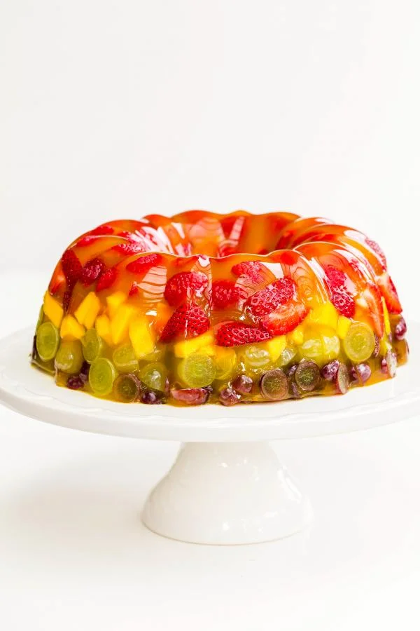

Home
Fruit Jello Cake

Ingredients
- 8 oz Raspberries
- 1 lb Strawberries
- 1 Mango
- 1 Orange optional
- 1 lb Green Grapes
- 1 lb Purple Grapes
- 14 oz D’Gari Gelatin Dessert pineapple or mango
Instructions
- Prepare fruits for the cake. Clean and cut them into equal pieces. I wouldn't recommend cutting raspberries. Note: Jello is best in mango or pineapple flavor. I found that a combination of the two works amazing together.
- Place raspberries, followed by strawberries. This is how the dessert will look like on the outside.
- Add mango, orange, and green grapes.
- Finish off by laying out purple grapes. Dissolve jello in hot water, following instructions on the box. Let the jello mixture cool competently.
- Slowly pour in the mixture over the fruits. Shake the tray a little, so it goes through all the sides. Cover the fruit competently with the jello.
- Leave it refrigerated until completely set, for about 2 hours. In order to remove it from the tray, pour hot water into a large bowl, and place the dish into it. As soon as you see a little bit of melting on the sides, cover the jello with a serving plate and turn it over. If necessary, wipe off the sides around the jello.
- Return to the refrigerator to keep it cold, until ready to serve. I would only remove the cake from tray a few hours before serving.